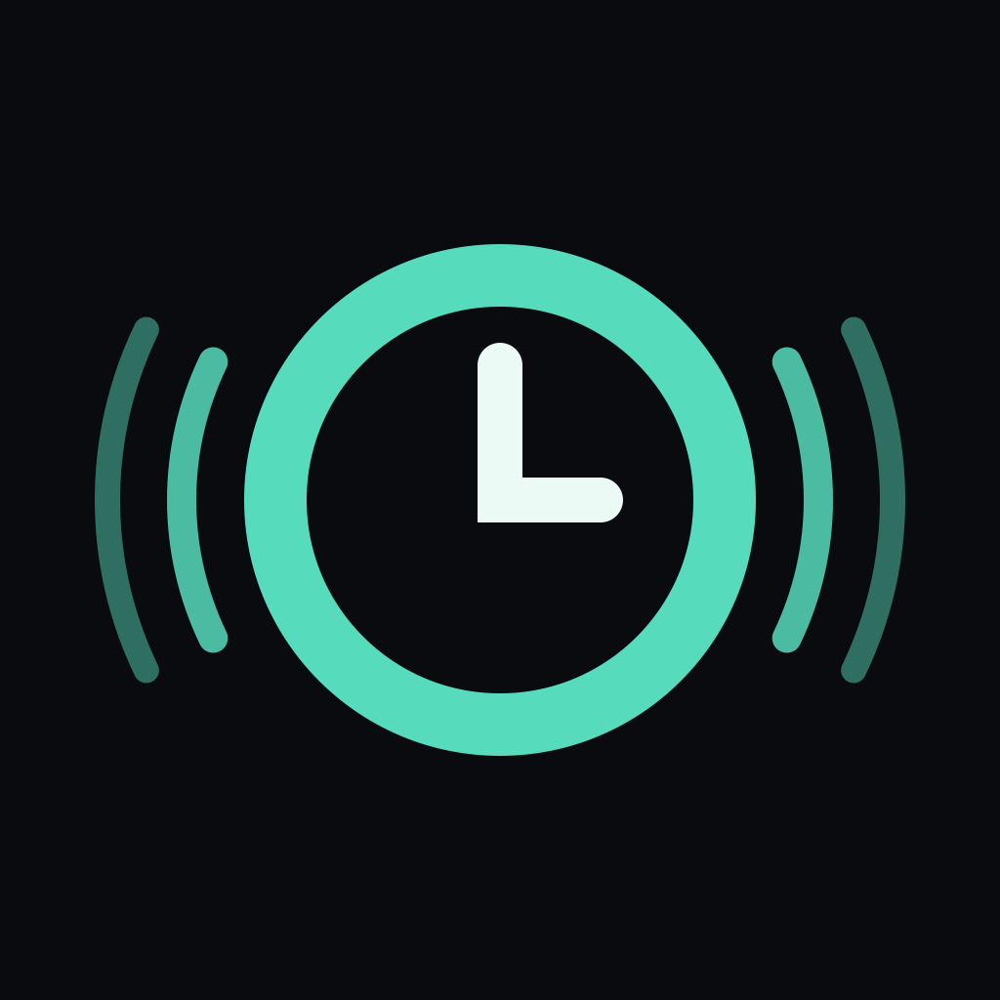

Feel time.
Stay present.
A simple countdown and count-up timer for Apple Watch. Choose halfway cues or regular intervals. Each cue adds a pulse, so you can follow your progress by touch.
Set up on your wrist or send settings from iPhone. No account, advertising or analytics SDK. English, Turkish, German, French and Spanish.
Get started →
A cue you can count
With ten-minute intervals, the first cue gives one pulse, the next two, then three. A separate finish pattern marks the end unless a counted interval already lands there.
Before you start
Apple Watch is required for haptics. Allow notifications and set Return to Clock for PulseCue to After 1 hour. Keep PulseCue open for counted cues. The timer continues if you leave; background alerts use the standard Watch notification pattern. Check the important reminder and test a short session before your presentation, talk or event.